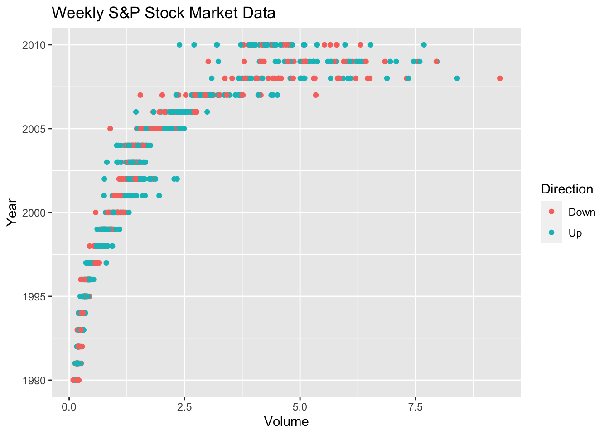

Using a little bit of algebra, prove that (4.2) is equivalent to (4.3). In other words, the logistic function representation and logit representation for the logistic regression model are equivalent.
Suppose we collect data for a group of students in a statistics class with variables \(X_1\) =hours studied, \(X_2\) =undergrad GPA, and \(Y\) = receive an A. We fit a logistic regression and produce estimated coefficient, \(\beta_0\) = −6; \(\beta_1\) = 0.05; \(\beta_2\) = 1.
(a) Estimate the probability that a student who studies for 40 h and has an undergrad GPA of 3:5 gets an A in the class.
We have the logic regression \[
\log \frac{p(X)}{1-p(X)}=-6+0.05X_1+X_2
\]
So, on average, 74% of people will in fact default.
Suppose that an individual has a 16% chance of defaulting on her credit card payment. What are the odds that she will default?
\[
\frac{p(X)}{1-p(X)}=0.1905.
\]
So the odds is 0.1905.
ISL Exercise 4.8.13 (a)-(i) (50pts)
This question should be answered using the Weekly data set, which is part of the ISLR2 package. This data is similar in nature to the Smarket data from this chapter’s lab, except that it contains 1,089 weekly returns for 21 years, from the beginning of 1990 to the end of 2010.
(a) Produce some numerical and graphical summaries of the Weekly data. Do there appear to be any patterns?
library(ISLR2)?Weekly # read the document of Weekly dataset# numerical summaries:summary(Weekly)
Year Lag1 Lag2 Lag3
Min. :1990 Min. :-18.1950 Min. :-18.1950 Min. :-18.1950
1st Qu.:1995 1st Qu.: -1.1540 1st Qu.: -1.1540 1st Qu.: -1.1580
Median :2000 Median : 0.2410 Median : 0.2410 Median : 0.2410
Mean :2000 Mean : 0.1506 Mean : 0.1511 Mean : 0.1472
3rd Qu.:2005 3rd Qu.: 1.4050 3rd Qu.: 1.4090 3rd Qu.: 1.4090
Max. :2010 Max. : 12.0260 Max. : 12.0260 Max. : 12.0260
Lag4 Lag5 Volume Today
Min. :-18.1950 Min. :-18.1950 Min. :0.08747 Min. :-18.1950
1st Qu.: -1.1580 1st Qu.: -1.1660 1st Qu.:0.33202 1st Qu.: -1.1540
Median : 0.2380 Median : 0.2340 Median :1.00268 Median : 0.2410
Mean : 0.1458 Mean : 0.1399 Mean :1.57462 Mean : 0.1499
3rd Qu.: 1.4090 3rd Qu.: 1.4050 3rd Qu.:2.05373 3rd Qu.: 1.4050
Max. : 12.0260 Max. : 12.0260 Max. :9.32821 Max. : 12.0260
Direction
Down:484
Up :605
cor(Weekly[1:8]) # exclued the non-numeric variable
By using the summary(), we can obtain a According to the results cor(), the variables Year and Volume appear to be associated, while other variables show little association.
# Visualize Volume ~ Yearggplot(data = Weekly, mapping =aes(x = Volume, y = Year, color = Direction) ) +geom_point() +labs(title ="Weekly S&P Stock Market Data", x ="Volume", y ="Year" )

# Visualize Lag ~ Directionggplot(data = Weekly, mapping =aes(x = Direction, y = Lag1) ) +geom_boxplot() +labs(title ="Weekly S&P Stock Market Data", x ="Direction", y ="Lag1" )
ggplot(data = Weekly, mapping =aes(x = Direction, y = Lag2) ) +geom_boxplot() +labs(title ="Weekly S&P Stock Market Data", x ="Direction", y ="Lag2" )
ggplot(data = Weekly, mapping =aes(x = Direction, y = Lag3) ) +geom_boxplot() +labs(title ="Weekly S&P Stock Market Data", x ="Direction", y ="Lag3" )
ggplot(data = Weekly, mapping =aes(x = Direction, y = Lag4) ) +geom_boxplot() +labs(title ="Weekly S&P Stock Market Data", x ="Direction", y ="Lag4" )
ggplot(data = Weekly, mapping =aes(x = Direction, y = Lag5) ) +geom_boxplot() +labs(title ="Weekly S&P Stock Market Data", x ="Direction", y ="Lag5" )
With the graphic information from the paired points plot and points plot, the association between Year and Volume is proven. The boxplots display the distribution of Lag1~Lag5 based on Direction, which don’t appear to be different between the two directions.
(b) Use the full data set to perform a logistic regression with Direction as the response and the five lag variables plus Volume as predictors. Use the summary function to print the results. Do any of the predictors appear to be statistically significant? If so, which ones?
library(gtsummary)logit_mod <-glm( Direction ~ Lag1 + Lag2 + Lag3 + Lag4 + Lag5 + Volume, family = binomial, data = Weekly )contrasts(Weekly$Direction) # to know which one was transformed as "1", Up or Down?
Up
Down 0
Up 1
summary(logit_mod)
Call:
glm(formula = Direction ~ Lag1 + Lag2 + Lag3 + Lag4 + Lag5 +
Volume, family = binomial, data = Weekly)
Coefficients:
Estimate Std. Error z value Pr(>|z|)
(Intercept) 0.26686 0.08593 3.106 0.0019 **
Lag1 -0.04127 0.02641 -1.563 0.1181
Lag2 0.05844 0.02686 2.175 0.0296 *
Lag3 -0.01606 0.02666 -0.602 0.5469
Lag4 -0.02779 0.02646 -1.050 0.2937
Lag5 -0.01447 0.02638 -0.549 0.5833
Volume -0.02274 0.03690 -0.616 0.5377
---
Signif. codes: 0 '***' 0.001 '**' 0.01 '*' 0.05 '.' 0.1 ' ' 1
(Dispersion parameter for binomial family taken to be 1)
Null deviance: 1496.2 on 1088 degrees of freedom
Residual deviance: 1486.4 on 1082 degrees of freedom
AIC: 1500.4
Number of Fisher Scoring iterations: 4
From the first part of results, we know that “Down” was transformed to “0”, while “Up” was transformed to “1”. According to the results of summary(), we have a logic regression formula:
To determine the significant predictors, we shall see the “Pr(>|z|)” column, and since \(Lag_2\) has a Pr(>|z|)<0.05, it is the only predictor that is statistically significant.
(c) Compute the confusion matrix and overall fraction of correct predictions. Explain what the confusion matrix is telling you about the types of mistakes made by logistic regression.
# Predicted labels from logistic regressionlogit_pred =ifelse(predict(logit_mod, Weekly, type ="response") >0.5,"Up","Down")# Confusion matrixlogit_cfm =table(Predicted = logit_pred, RealDir = Weekly$Direction)print(logit_cfm)
According to the confusion matrix, the model has a correction rate of 56.10652%, while the error rate of this model is 43.89348%. Separately, the model has a correction rate of \(\frac{557}{557+48}=92.06612\%\) when predicting observation with Up Direction, and \(\frac{54}{54+430}=11.15702\%\) for the observation with Down Direction.
(d) Now fit the logistic regression model using a training data period from 1990 to 2008, with Lag2 as the only predictor. Compute the confusion matrix and the overall fraction of correct predictions for the held out data (that is, the data from 2009 and 2010).
Weekly_train<-Weekly[1990<=Weekly$Year & Weekly$Year<=2008,]Weekly_test<-Weekly[2009<=Weekly$Year & Weekly$Year<=2010,]logit_mod1 <-glm( Direction ~ Lag2, family = binomial, data = Weekly_train )summary(logit_mod1)
Call:
glm(formula = Direction ~ Lag2, family = binomial, data = Weekly_train)
Coefficients:
Estimate Std. Error z value Pr(>|z|)
(Intercept) 0.20326 0.06428 3.162 0.00157 **
Lag2 0.05810 0.02870 2.024 0.04298 *
---
Signif. codes: 0 '***' 0.001 '**' 0.01 '*' 0.05 '.' 0.1 ' ' 1
(Dispersion parameter for binomial family taken to be 1)
Null deviance: 1354.7 on 984 degrees of freedom
Residual deviance: 1350.5 on 983 degrees of freedom
AIC: 1354.5
Number of Fisher Scoring iterations: 4
# Predicted labels from logistic regressionlogit_pred1 =ifelse(predict(logit_mod1, Weekly_test, type ="response") >0.5,"Up","Down")# Confusion matrixlogit_cfm1 =table(Predicted = logit_pred1, RealDir = Weekly_test$Direction)print(logit_cfm1)
So, the overall fraction of correct predictions rate is 62.5%.
(e) Repeat (d) using LDA.
library(MASS)# Fit LDAlda_mod <-lda( Direction ~ Lag2, data = Weekly_train )lda_mod
Call:
lda(Direction ~ Lag2, data = Weekly_train)
Prior probabilities of groups:
Down Up
0.4477157 0.5522843
Group means:
Lag2
Down -0.03568254
Up 0.26036581
Coefficients of linear discriminants:
LD1
Lag2 0.4414162
So, the overall fraction of correct predictions rate is 62.5%.
(f) Repeat (d) using QDA.
# Fit QDAqda_mod <-qda( Direction ~ Lag2, data = Weekly_train )qda_mod
Call:
qda(Direction ~ Lag2, data = Weekly_train)
Prior probabilities of groups:
Down Up
0.4477157 0.5522843
Group means:
Lag2
Down -0.03568254
Up 0.26036581
So, the overall fraction of correct predictions rate is 50%.
(h) Repeat (d) using naive Bayes.
library(e1071)# Fit Naive Bayes classifiernb_mod <-naiveBayes( Direction~Lag2, data = Weekly_train )nb_mod
Naive Bayes Classifier for Discrete Predictors
Call:
naiveBayes.default(x = X, y = Y, laplace = laplace)
A-priori probabilities:
Y
Down Up
0.4477157 0.5522843
Conditional probabilities:
Lag2
Y [,1] [,2]
Down -0.03568254 2.199504
Up 0.26036581 2.317485
So, the overall fraction of correct predictions rate is 58.65385%.
(i) Which of these methods appears to provide the best results on this data?
The Logistic Regression and LDA have the highest correction rate, while the KNN (K=1) has the least. So we may conclude that Logistic Regression and LDA appear to provide the best results on Weekly data.
Bonus question: ISL Exercise 4.8.13 Part (j) (30pts)
(j) Experiment with different combinations of predictors, including possible transformations and interactions, for each of the methods. Report the variables, method, and associated confusion matrix that appears to provide the best results on the held out data. Note that you should also experiment with values for K in the KNN classifier.
Let’s start with Logic Regression. According to the results from (b), we can find that Lag1 is also relatively significant (although Pr(>|z|) is not less than 0.05). So this time we may consider using Lag1 and Lag2 as predictors.
logit_mod <-glm( Direction ~ Lag1 + Lag2, family = binomial, data = Weekly_train )summary(logit_mod)
Call:
glm(formula = Direction ~ Lag1 + Lag2, family = binomial, data = Weekly_train)
Coefficients:
Estimate Std. Error z value Pr(>|z|)
(Intercept) 0.21109 0.06456 3.269 0.00108 **
Lag1 -0.05421 0.02886 -1.878 0.06034 .
Lag2 0.05384 0.02905 1.854 0.06379 .
---
Signif. codes: 0 '***' 0.001 '**' 0.01 '*' 0.05 '.' 0.1 ' ' 1
(Dispersion parameter for binomial family taken to be 1)
Null deviance: 1354.7 on 984 degrees of freedom
Residual deviance: 1347.0 on 982 degrees of freedom
AIC: 1353
Number of Fisher Scoring iterations: 4
# Predicted labels from logistic regressionlogit_pred =ifelse(predict(logit_mod, Weekly_test, type ="response") >0.5,"Up","Down")# Confusion matrixlogit_cfm =table(Predicted = logit_pred, RealDir = Weekly_test$Direction)print(logit_cfm)
As we can see, the correction rate decrease, so we may keep the origin method.
For LDA, we can use the ratio of Lag2 and Lag1 as predictor,
# Fit LDAlda_mod <-lda( Direction ~ Lag2/Lag1, data = Weekly_train )lda_mod
Call:
lda(Direction ~ Lag2/Lag1, data = Weekly_train)
Prior probabilities of groups:
Down Up
0.4477157 0.5522843
Group means:
Lag2 Lag2:Lag1
Down -0.03568254 -0.8014495
Up 0.26036581 -0.1393632
Coefficients of linear discriminants:
LD1
Lag2 0.39070178
Lag2:Lag1 0.04076039
We may now consider keeping the only one significant variable, Lag2. So we choose \(\log{(Lag_2)}\) as predictor.
# Fit QDAqda_mod <-qda( Direction ~log(abs(Lag2)), data = Weekly_train )qda_mod
Call:
qda(Direction ~ log(abs(Lag2)), data = Weekly_train)
Prior probabilities of groups:
Down Up
0.4477157 0.5522843
Group means:
log(abs(Lag2))
Down 0.006442608
Up 0.043712035
Lastly, try the \({Lag_2}^2\) as predictor for native Bayes method.
# Fit Naive Bayes classifiernb_mod <-naiveBayes( Direction~(Lag2)^2, data = Weekly_train )nb_mod
Naive Bayes Classifier for Discrete Predictors
Call:
naiveBayes.default(x = X, y = Y, laplace = laplace)
A-priori probabilities:
Y
Down Up
0.4477157 0.5522843
Conditional probabilities:
Lag2
Y [,1] [,2]
Down -0.03568254 2.199504
Up 0.26036581 2.317485
The result, as well as the trend, arr the same as QDA. So native Bayes isn’t suitable method for this question as well.
In conclusion, the best results are still provided by using Lag2 as predictor in Logistic Regression and LDA.
Bonus question: ISL Exercise 4.8.4 (30pts)
When the number of features p is large, there tends to be a deterioration in the performance of KNN and other local approaches that perform prediction using only observations that are near the test observationfor which a prediction must be made. This phenomenon is known as the curse of dimensionality, and it ties into the fact that non-parametric approaches often perform poorly when p is large. We will now investigate this curse.
(a) Suppose that we have a set of observations, each with measurements on p = 1 feature, X. We assume that X is uniformly (evenly) distributed on [0, 1]. Associated with each observation is a response value. Suppose that we wish to predict a test observation’s response using only observations that are within 10% of the range of X closest to that test observation. For instance, in order to predict the response for a test observation with X = 0.6, we will use observations in the range [0.55, 0.65]. On average, what fraction of the available observations will we use to make the prediction?
In the case that \(X\)∈[0.05,0.95], apparently the availiable range is [\(X\)-0.05,\(X\)+0.05].
However, since\(X\)is uniformly (evenly) distributed on [0, 1],\(X\)might be less than 0.05 or greater than 0.95. At this time, the range is \(X\)+0.05 or 1.05-X. Than we may calculate the fraction as follows:
(b) Now suppose that we have a set of observations, each with measurements on p = 2 features, \(X_1\) and \(X_2\) . We assume that (\(X_1\) , \(X_2\) ) are uniformly distributed on [0, 1] × [0, 1]. We wish to predict a test observation’s response using only observations that are within 10% of the range of \(X_1\) and within 10% of the range of \(X_x\) closest to that test observation. For instance, in order to predict the response for a test observation with \(X_1\) = 0.6 and \(X_2\) = 0.35, we will use observations in the range [0.55, 0.65] for \(X_1\) and in the range [0.3, 0.4] for \(X_2\) . On average, what fraction of the available observations will we use to make the prediction?
Since the \(X_1\) and \(X_2\) are assumed independent. Using the conclusion from (a), the fraction will be
\[
0.0975 \times 0.0975=0.00950625
\]
(c) Now suppose that we have a set of observations on p = 100 features. Again the observations are uniformly distributed on each feature, and again each feature ranges in value from 0 to 1. We wish to predict a test observation’s response using observations within the 10% of each feature’s range that is closest to that test observation. What fraction of the available observations will we use to make the prediction?
In this situation, similarly, the fraction will be
\[
0.0975^{100} \approx 0
\]
(d) Using your answers to parts (a)-(c), argue that a drawback of KNN when p is large is that there are very few training observations “near” any given test observation.
Apparently, since the fraction is a decimal between 0 and 1, and the fraction of the available observations we can use to make the prediction is \(0.0975^p\), that means with the higher p, the fraction will be smaller.
(e) Now suppose that we wish to make a prediction for a test observation by creating a p-dimensional hypercube centered around the test observation that contains, on average, 10% of the training observations. For p = 1; 2, and 100, what is the length of each side of the hypercube? Comment on your answer.
Supoose the length of each side is \(X\), and the total range is 1. That means